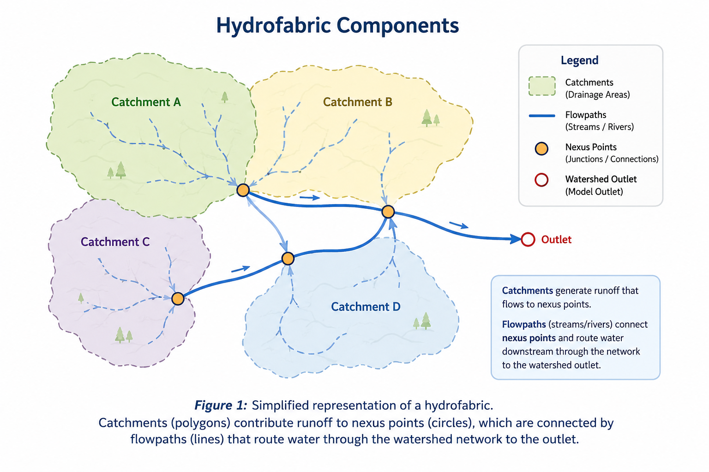
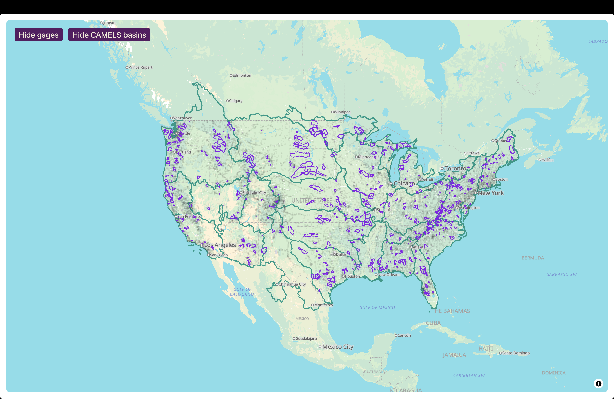
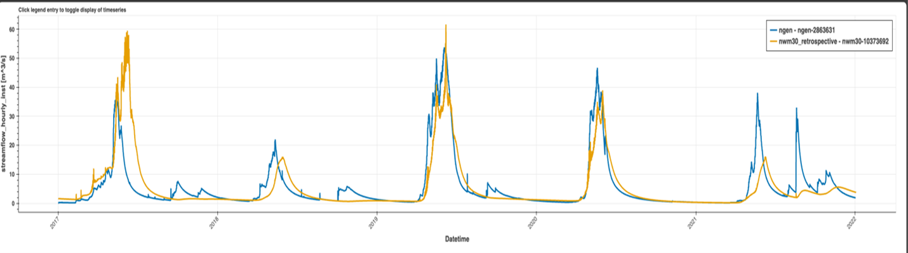
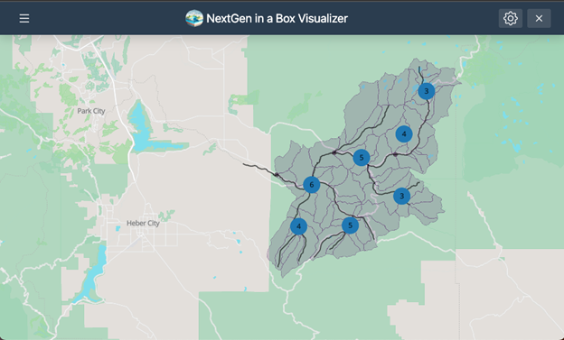
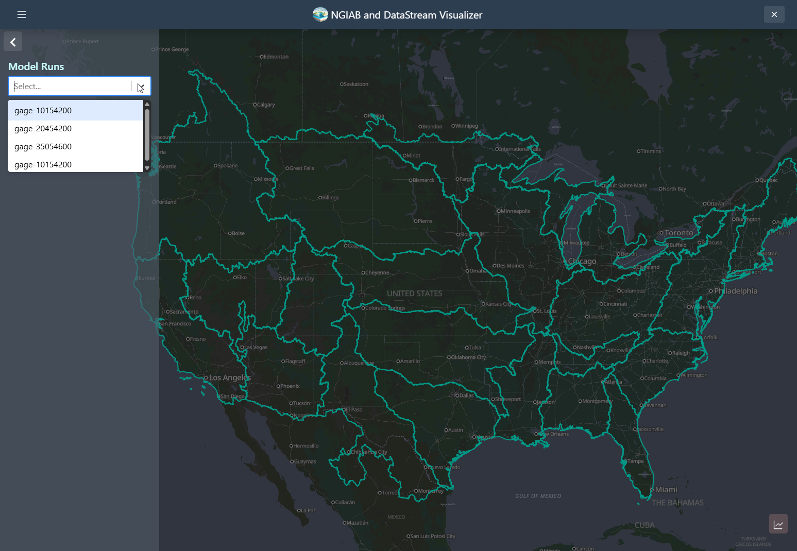
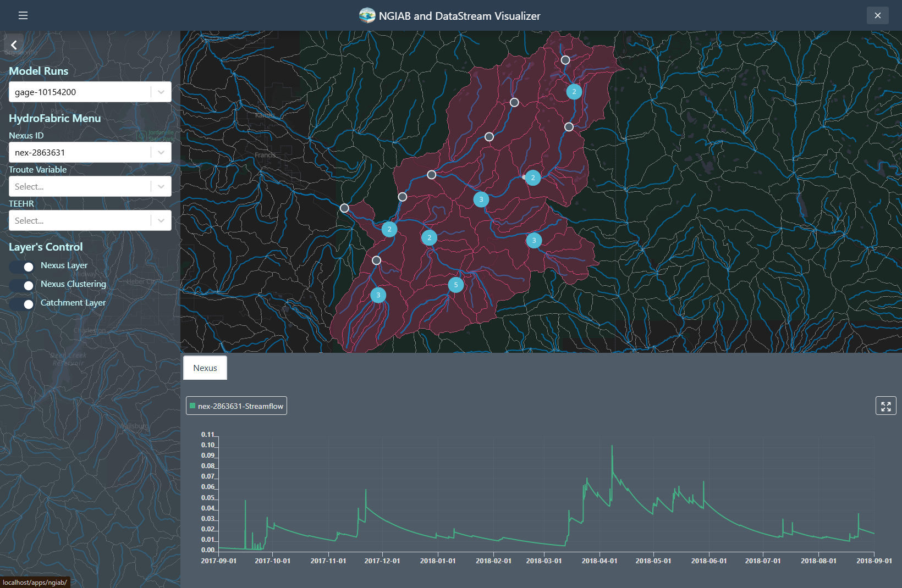
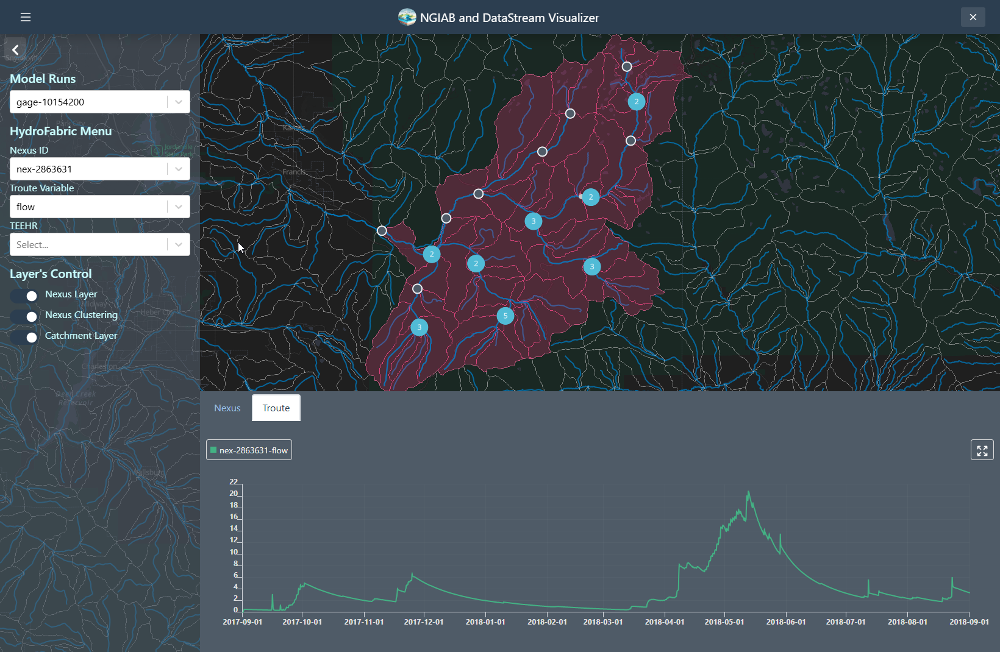
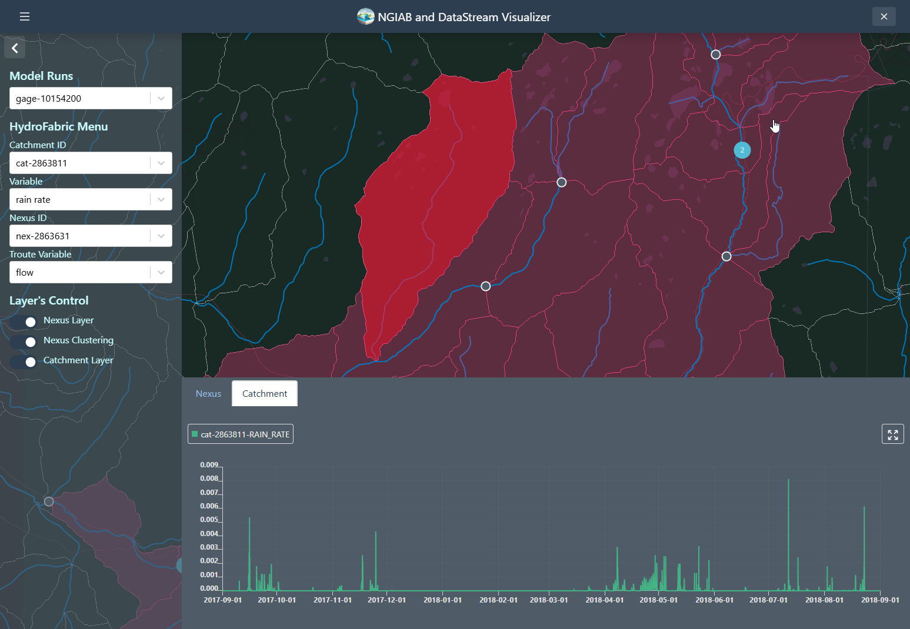
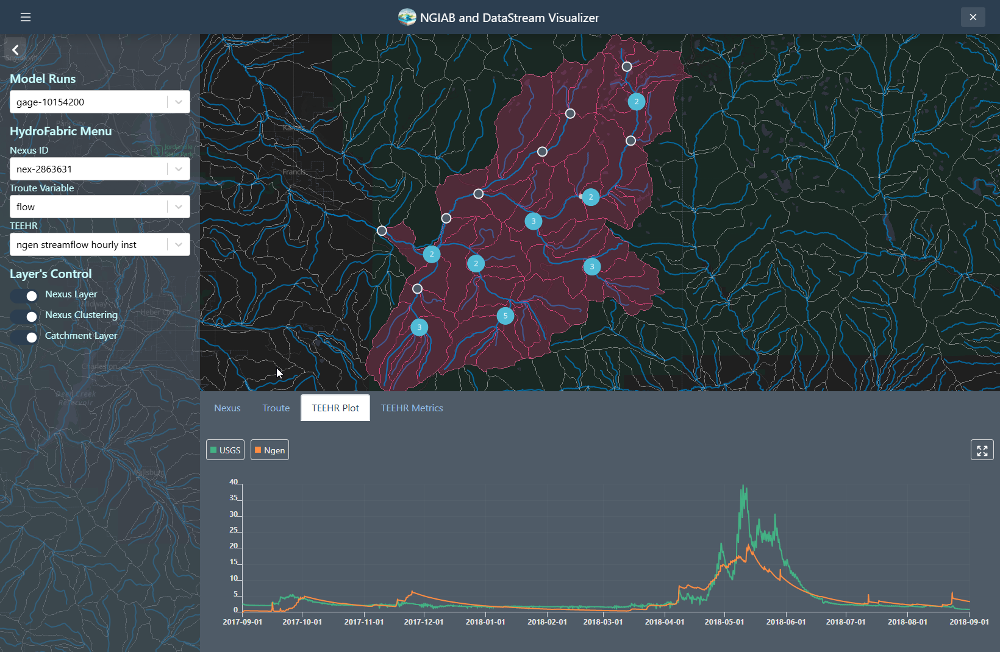
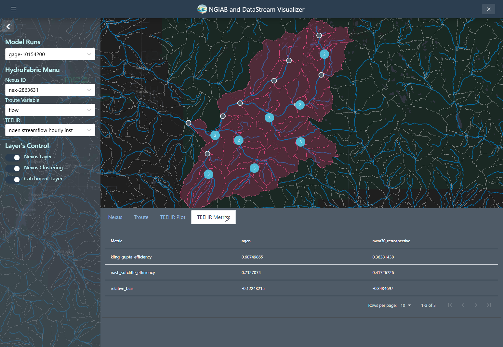

All in One View
Content from Introduction
Last updated on 2026-06-24 | Edit this page
Estimated time: 15 minutes
Overview
Questions
- What is the NextGen Framework?
- What is NextGen in a Box (NGIAB)?
- What is containerization?
- Why should I use NGIAB?
Objectives
- Identify key components of the NGIAB architecture
- Describe NGIAB’s role in the NextGen Framework
- Determine use cases for NGIAB
Introduction to NextGen
The U.S. National Water Model (NWM) provides hydrologic predictions for over 2.7 million river reaches across the United States (Cosgrove et al., 2024). The Next Generation Water Resources Modeling Framework (NextGen) is an advancement of the NWM, setting the stage for a more flexible modeling approach. NextGen promotes model interoperability and standardizes data workflows, allowing the integration of various hydrologic models tailored to specific regional processes, providing key flexibility needed for future success with continental-scale modeling. The NextGen framework continues to undergo testing, improvements, and updates through research efforts at the NOAA Cooperative Institute for Research to Operations in Hydrology (CIROH).
What is NGIAB?
Managing NextGen’s complex software ecosystem remains challenging. The NextGen framework’s implementation requires handling numerous software libraries and dependencies. To streamline this, we developed NextGen In A Box (NGIAB)—an open-source, containerized solution that encapsulates the NextGen framework and essential modeling components into a self-contained, reproducible application. By eliminating manual configuration burdens, NGIAB enables researchers to focus on scientific inquiry rather than software setup and maintenance. Beyond simplifying deployment of the NextGen Framework, NGIAB fosters collaboration among researchers, academic institutions, and government agencies by providing a scalable, community-driven modeling environment. In essence, NGIAB provides a unified solution that powers NextGen models, including future versions of the NWM starting with version 4.
Terminology
- NextGen: overarching hydrologic modeling framework
- NGIAB: containerized distribution of NextGen
-
ngen: model execution engine used within NextGen - Community Hydrofabric: geospatial dataset containing catchments, flowpaths, nexus points, and watershed connectivity information
- NWM: operational implementation maintained by the National Weather Service
Containerization
- Containerization addresses compatibility issues and hardware variation challenges by encapsulating applications, their dependencies, and runtime environments into a single, portable unit.
- Think of containerization like putting a model and all its tools into a sealed toolbox – you can carry and run it anywhere, and everything needed is inside..
- This ensures consistent execution across diverse computing environments, regardless of differences in hardware or software configurations.
- NGIAB leverages Docker (Boettiger, 2015) and Singularity (Hunt et al., 2005) to streamline deployment.
Architectural Components
NGIAB is designed as a multi-layered containerized tool that encapsulates the NextGen framework and many components relevant to the NWM within a reproducible environment.
![A concentric circle diagram titled "NGIAB Containerization Architecture." It consists of four nested layers representing different components. At the center is "1. Core Framework" in gray, symbolizing the core hydrological modeling framework. Surrounding it is "2. CI/CD Pipeline" in green, representing tools that facilitate rapid development and reliability. The next layer is "3. NGIAB Containerization" in blue, indicating simplified access to modeling tools. The outermost layer is "4. Technologies & Methods" in dark blue, representing supportive tools and practices. Labels on the left of the diagram describe the increasing level of support from the core outward.](../fig/fig1-1.png)
Figure 1 illustrates the layered architecture of NGIAB.
- Layer 1: At its core (Layer 1) lies a suite of integrated hydrological modeling components and hydrofabric (a geospatial dataset representing hydrologic features like rivers, basins, and connections), designed to work together within the NextGen framework. Hydrologic models in NGIAB are Basic Model Interface (BMI) compliant, meaning that they follow a standard structure and can be swapped in and out for one another.
- Layer 2: Layer 1 is wrapped by the Continuous Integration/Continuous Deployment (CI/CD) Pipeline layer (Layer 2). CI/CD are tools and practices that automate code testing and updates. NGIAB leverages GitHub Actions to ensure automated testing, integration, and deployment capabilities for reproducible workflows.
- Layer 3: The NGIAB Containerization layer (Layer 3) provides the containerized environment and essential configuration tools.
- Layer 4: The outermost layer (Layer 4), Technologies & Methods, provides broader infrastructure, best practices, and support for deployment across different computing environments (local, cloud, HPC), and facilitates community engagement and contribution.
The architecture emphasizes four key aspects:
- core hydrological modeling framework capabilities,
- simplified access to modeling tools,
- facilitation of rapid development and reliability,
- and integration of supportive tools and practices.
Extensions of NGIAB
Several extensions of NGIAB are already integrated with supporting tools and datasets, including the Community Hydrofabric, Data Preprocessor, Tools for Exploratory Evaluation in Hydrologic Research (TEEHR), and Data Visualizer (Figure 2).
![A flowchart diagram showing the NGIAB model execution process. The central box labeled "NGIAB Model Execution" is connected to three components. To the left is a yellow-green box labeled "Data Preprocess" (Data Preprocessor), with three subcomponents listed: "GPKG Sub-setting," "Realization," and "Forcing." To the right, two boxes are connected to the center: a purple box labeled "TEEHR Evaluation" and a green box labeled "Data Visualizer." Dashed arrows indicate the flow of data between preprocessing, model execution, and evaluation/visualization.](../fig/fig1-2.png)
These components support a complete workflow from hydrofabric and forcing preparation through model execution, evaluation, calibration, and visualization.
Example Applications
Steps common to all hydrologic modeling frameworks include data collection and preparation, framework setup and model execution, evaluation, results visualization, and calibration. Researchers can use NGIAB to execute model runs for their basins of interest. Figures 3 and 4 show examples of how NGIAB and its extensions have been used to simulate streamflow for five years in the Provo River basin.

![A screenshot of the NextGen in a Box Visualizer web interface. The left panel contains a "Time Series Menu" where the user can select a Nexus ID, variable (e.g., flow), and TEEHR data source. A map in the center displays a stream reach with a highlighted section representing the drainage basin and a blue point, indicating the selected nexus location. Below the map, a time series plot compares USGS (blue line) and Ngen (orange line) streamflow data from 2017 to 2023. On the lower left, a table labeled "Teehr Metrics" presents performance metrics (e.g., Kling-Gupta Efficiency, Nash-Sutcliffe Efficiency, and Relative Bias) for the selected model versus reference data.](../fig/fig1-5.png)
Why should I use NGIAB?
NGIAB makes community contribution and model
integration possible in research settings by simplifying setup
and providing demos, allowing hydrologists and researchers to configure
and modify localized water models. Built on open-source code and the
ngen/BMI foundation, NGIAB allows integration of a
hydrology process model into a larger hydrologic simulation framework,
allowing a researcher to focus on their area of specific modeling
expertise. Its lightweight container size also empowers hydrologists to
execute large-scale runs efficiently and reduce computational
bottlenecks. By strengthening collaboration across research teams, NGIAB
will help drive the evolution of community-scale water modeling and
accelerate the transition from academic innovation to real-world
operational use.
Your Turn
Here are some self-assessment questions for discussion or consideration:
- Do I understand how NGIAB fits into the NextGen Framework?
- What are the key design features and extensions of NGIAB?
- How can I use NGIAB to answer my research questions?
- How can I use NGIAB to contribute my expertise to the NextGen Framework?
- How do the Community Hydrofabric, Data Preprocessor, TEEHR, and Data Visualizer support the NGIAB workflow?
- The Next Generation Water Resources Modeling Framework (NextGen) advances the National Water Model with flexible, modular, and regionally adaptive hydrologic modeling at national scale.
- NextGen In A Box (NGIAB) packages the complex NextGen system into an open-source, containerized application for easier access and usability.
- NGIAB uses Docker and Singularity for portability across local machines, cloud platforms, and HPC systems.
- NGIAB’s ecosystem includes the Community Hydrofabric, Data Preprocessor, TEEHR, Data Visualizer, and calibration tools that support end-to-end hydrologic modeling workflows.
- NGIAB fosters an open ecosystem where researchers, developers, and practitioners actively contribute new models, extensions, and workflows.
Content from Installation and Setup
Last updated on 2026-06-24 | Edit this page
Estimated time: 12 minutes
This episode can be a standalone tutorial for those who want a quick introduction to NGIAB. This tutorial follows the case study from our CloudInfra repository. Users who wish to learn more about NGIAB can explore our other episodes in this module.
Overview
Questions
- How do I install and set up NGIAB?
- What are the prerequisites for running NGIAB?
- How do I verify my installation?
Objectives
- Install and verify Docker
- Set up NGIAB project directories
- Run a sample NGIAB run
Introduction
This lesson guides you through installing and setting up NGIAB, a containerized solution designed to simplify running the NextGen modeling framework locally. It will also walk you through running pre-configured input data packages. NGIAB leverages Docker containers to ensure consistent and reproducible runs.
Are you using an HPC?
Instead of following these instructions, follow the guidance in the HPC sections in Advanced Topics.
System Requirements
Before installing NGIAB, ensure you have:
- Operating System: Windows (with WSL), macOS, or Linux
- Software: Docker, Git
- Recommended Minimum RAM: 8 GB
Connecting to a remote machine through SSH?
To use the Data Visualizer through a Secure Shell (SSH) connection, you will have to set up port forwarding when connecting to the remote machine. Port forwarding will allow you to access a remotely hosted browser session on your local machine. See the instructions under “Using NGIAB through an SSH connection” in the Advanced Topics episode in this training module.
Docker Installation
Note: Users who already have Docker installed will still need to install a separate WSL distro and set it as their default, if they have not already.
-
Install Windows Subsystem for Linux (WSL):
Install Docker Desktop from Docker’s official website.
Launch Docker Desktop and open WSL terminal as administrator.
-
Verify Docker installation:
This should generate a message that shows that your installation is working.
-
Install Astral UV:
CAUTION: WSL distributions
NGIAB commands cannot be run through the docker-desktop
distribution. If you installed Docker before WSL, you will likely need
to install a new WSL distribution and set it as your default.
For example, Ubuntu can be installed and set as the default distribution with the following commands:
Install Docker Desktop from Docker’s official Mac installer.
Launch Docker Desktop.
-
Verify Docker installation:
This should generate a message that shows that your installation is working.
-
Install Astral UV.
Install Docker by following the official Docker guide.
-
Start Docker service and verify:
This should generate a message that shows that your installation is working.
-
Install Astral UV.
NGIAB Setup
These steps will lead you through the process of running NGIAB with a set of pre-configured input data and realization files. A realization file is a scenario using a specific model on a specific region.
Step 2: Download Sample Data
Choose one of the following datasets. File sizes and model configurations are provided so that you can download a dataset suitable for your interests, available disk space, and network speed.
Option 1: AWI-009
Models: SLOTH (dummy model), NoahOWP (land surface model), CFE (conceptual rainfall-runoff model, functionally equivalent to NWM)
Compressed file size: 249 MB | Extracted file size: 1.77 GB
Step 3: Clone and Run NGIAB
CAUTION: For Windows users: pulling with LFs
Before cloning the repository, please ensure that Git is configured to pull with LF line breaks instead of CRLFs. If CRLFs are used, then the carriage return characters will prevent the shell scripts from running properly.
There are a couple options to configure this.
Visual Studio Code can be used to manually toggle between line breaks.
Git can be configured from the command line.
- Download, extract, and run this interactive
.batscript
✅ Ready to Go!
If you’ve completed the steps above and verified your dataset and
working directory, you are ready to run the interactive guide script
guide.sh. It will prompt you to select input data,
processing modes, and will initiate your run.
This will walk you through the NGIAB setup and launch your first run.
guide.sh Tips
- When prompted to input the filepath to a data directory, make sure
the path points to the parent directory of
config,forcings, etc. - A series of prompts will appear that ask you if you want to use the existing Docker image or update to the latest image. Updating to the latest image will take longer, so for the purposes of this tutorial, using the existing Docker image is fine.
- When prompted to run NextGen in serial or parallel mode, either is fine.
- The option to open a Bash shell (interactive shell) will allow you to explore the data directory without quitting NGIAB.
- Redirecting command output to
/dev/nullsignificantly reduces the amount of output. Either is fine, but if you are curious about what is happening inside the model, we suggest that you do not redirect the output.
Troubleshooting
-
Ensure Docker is running before executing
guide.sh. For permission errors on Linux, run Docker commands with
sudoor add your user to the Docker group:
Tip: Always execute a quick run with provided sample datasets to verify the successful setup of NGIAB.
Additional Resources
Are you interested in customizing your run with your own catchments (watersheds) and run configurations? Do you want to explore more functionalities of NGIAB? Check out the following episodes:
- NGIAB simplifies NextGen framework deployment through Docker.
- Use
guide.shfor interactive configuration and run execution. - Always confirm successful setup by executing provided sample runs.
Content from Ways to run NGIAB
Last updated on 2026-06-24 | Edit this page
Estimated time: 10 minutes
Overview
Questions
- How do I execute a NextGen run?
Objectives
- Recognize methods to execute NextGen models
- Execute a NextGen run using NGIAB
1. Model Execution using guide.sh
guide.sh is used to execute pre-configured NextGen runs
in NGIAB. These settings can be configured by users ahead of time using
the Data Preprocessor tool.
Execute the following commands:
BASH
cd NextGen
git clone https://github.com/CIROH-UA/NGIAB-CloudInfra.git
cd NGIAB-CloudInfra
./guide.shguide.sh will prompt you to enter input data pathways
and allow you to select a computational mode (serial or parallel
processing). After the run is complete, guide.sh will give
you the option to evaluate model predictions and visualize results
(discussed in the next two episodes).
2. Model Execution using Data Preprocessor
A secondary method for executing a NextGen run in NGIAB is by using
the Data Preprocessor’s CLI. The Data Preprocessor prepares a complete
NGIAB run package by subsetting the hydrofabric, generating forcings,
and creating realization and BMI configuration files. It can also
automatically launch a Docker-based NGIAB run after preprocessing using
the --run flag.
BASH
uvx -p 3.10 --from ngiab_data_preprocess cli -i gage-02342500 -sfr --start 2020-01-01 --end 2020-01-07 --source aorc --runIn this command, uvx runs the Data Preprocessor without
installing it as a package. The -i argument specifies the
location to model, -sfr subsets the hydrofabric, generates
forcings, and creates realization files, --source aorc
selects AORC forcing data, and --run automatically launches
the NGIAB simulation after preprocessing.
As this module is being updated constantly, check back on the (NGIAB_data_preprocess GitHub Repository) for the latest updates on its functionality.
3. Model Execution using CIROH-2i2c JupyterHub
Another way to interactively run NextGen is through Jupyter notebooks using the CIROH-2i2c JupyterHub. To get started, log in to the CIROH-2i2c JupyterHub. If you do not yet have access, please refer to the Infrastructure Access page for instructions on requesting an account. Launch a JupyterHub server by selecting your preferred server size (or the default Small option for testing), choosing the CIROH Community NextGen Hub image, and clicking Start. For additional setup instructions, tutorials, and usage details, see the CIROH Hub documentation.
4. Model Execution using DataStreamCLI
DataStreamCLI provides an alternative command-line workflow for executing NextGen simulations. In this workflow, users can subset the hydrofabric using the Data Preprocessor and then use that subset hydrofabric as input to DataStreamCLI. DataStreamCLI automatically generates forcings, realizations, and BMI configuration files as part of the execution workflow before launching a NextGen simulation. This approach is useful for users who prefer an automated and scriptable workflow for running simulations and managing forcing data.
BASH
uvx --from ngiab_data_preprocess cli -i gage-02342500 -s
cd /path/to/datastreamcli
cp ~/ngiab_preprocess_output/gage-02342500/config/gage-02342500_subset.gpkg .
chmod +x ./scripts/datastream
./scripts/datastream -s 202001010100 \
-e 202001070000 \
-C NWM_RETRO_V3 \
-d $(pwd)/data/datastream_test \
-g $(pwd)/gage-02342500_subset.gpkg \
-R $(pwd)/configs/ngen/realization_sloth_nom_cfe_pet_troute.json \
-n 4In this command, -s specifies the simulation start time,
-e specifies the end time, -C selects the
forcing source, -d specifies the output directory,
-g provides the hydrofabric geopackage, -R
specifies the realization template, and -n sets the number
of processes used during execution.
For installation instructions and additional examples, refer to the DataStreamCLI GitHub Repository.
Your Turn
Try one of the four methods described in this lesson to execute a NextGen run:
- Use
guide.shto execute a run from a preprocessed NGIAB dataset. - Use the Data Preprocessor tool with the
--runoption to automatically prepare and execute a simulation. - Explore the CIROH-2i2c JupyterHub workflow for cloud-based execution.
- Review the DataStreamCLI workflow and compare it with the Data
Preprocessor and
guide.shapproaches.
- NGIAB supports multiple execution workflows, including
guide.sh, the Data Preprocessor tool, CIROH-2i2c JupyterHub, and DataStreamCLI. - The
guide.shworkflow provides the most complete NGIAB experience, including optional evaluation and visualization. - The Data Preprocessor tool can automatically prepare and execute a NextGen simulation using a single command.
- CIROH-2i2c JupyterHub provides a cloud-based environment for running NGIAB without local installation.
- DataStreamCLI automates forcing generation, realization creation, BMI configuration, and model execution through a command-line workflow.
Content from Community Hydrofabric
Last updated on 2026-06-24 | Edit this page
Estimated time: 50 minutes
Overview
Questions
- How does the Community Hydrofabric support NGIAB workflows?
Objectives
- Explain how the Community Hydrofabric interacts with NGIAB
- Identify the improvements provided by the Community Hydrofabric
Using the Community Hydrofabric with NGIAB
The Community Hydrofabric provides the geospatial foundation used throughout the NGIAB ecosystem. During data preparation, NGIAB automatically retrieves and subsets hydrofabric data for the selected study area. These data are then used during model execution, routing, and visualization workflows.
Users typically interact with the Community Hydrofabric through the Data Preprocessor and Data Visualizer rather than directly modifying hydrofabric files.
What is the Community Hydrofabric?
The Community Hydrofabric is a CIROH-maintained fork of Lynker Spatial’s NextGen Hydrofabric v2.2 (CIROH, 2025). It was developed to improve compatibility with CIROH projects, including the NextGen In A Box (NGIAB) ecosystem. The Community Hydrofabric serves as a temporary bridge until future NextGen Hydrofabric releases incorporate these improvements directly.
Like the NextGen Hydrofabric, the Community Hydrofabric provides the geospatial representation of a watershed, including catchments, flowpaths, nexus points, and associated hydrologic attributes. These datasets define watershed connectivity and provide the spatial framework required for NextGen simulations.

Hydrofabric Terminology
Catchments are land areas that contribute runoff to a downstream location.
Flowpaths represent streams and rivers that transport water through a watershed.
Nexus points define connections between catchments, flowpaths, reservoirs, and watershed outlets.
Community Hydrofabric Improvements
Several enhancements have been added to improve NGIAB workflows:
- Corrected gage-to-flowpath mappings for approximately 4,500 gages.
- GeoPackage-compliant hydrolocation layers that improve GIS interoperability.
- Database indexing that improves retrieval and query performance.
These improvements help ensure that hydrofabric data can be efficiently used by preprocessing, routing, visualization, and evaluation tools within the NGIAB ecosystem.
Community Hydrofabric Products
The Community Hydrofabric is available as a complete CONUS dataset and as regional subsets organized by Vector Processing Unit (VPU). These products provide the catchments, flowpaths, nexus points, and hydrologic attributes used throughout NGIAB workflows.
Figure 2 shows the spatial extent of Community Hydrofabric datasets across the continental United States.

NGIAB automatically accesses and subsets the required hydrofabric data during preprocessing, so users generally do not need to manually download hydrofabric products.
Each hydrofabric dataset contains the watershed boundaries, stream network geometry, nexus connectivity, and supporting attributes required to configure and execute NextGen simulations.
Community Hydrofabric in NGIAB
Because nearly every NGIAB workflow relies on watershed connectivity and spatial relationships, the Community Hydrofabric acts as a shared foundation across preprocessing, model execution, calibration, evaluation, and visualization. The Community Hydrofabric supports multiple NGIAB components:
- The Data Preprocessor uses hydrofabric data to subset study areas and generate model-ready inputs.
- Model execution workflows use hydrofabric connectivity to define routing relationships.
- The Data Visualizer uses hydrofabric geometries to display catchments, flowpaths, and nexus points.
- Evaluation and calibration workflows use hydrofabric metadata to associate model outputs with observation locations.
Together, these components allow NGIAB to provide an integrated workflow from data preparation through model execution, evaluation, calibration, and visualization.
Your Turn
Use the Data Preprocessor to generate a study area for a selected gage. Explore the resulting hydrofabric files or visualize the study area using the NGIAB Data Visualizer. Identify the catchments, flowpaths, and outlet nexus associated with your watershed.
- The Community Hydrofabric is a CIROH-maintained fork of NextGen Hydrofabric v2.2.
- NGIAB uses the Community Hydrofabric during preprocessing, routing, model execution, evaluation, calibration, and visualization.
- The Community Hydrofabric includes corrected gage mappings, GeoPackage compatibility improvements, and database indexing enhancements.
- Hydrofabric data are automatically accessed and subset by NGIAB during study area preparation.
Content from Data Preprocessor
Last updated on 2026-06-24 | Edit this page
Estimated time: 50 minutes
Overview
Questions
- How should I prepare my run directory?
- What is the Data Preprocess tool?
Objectives
- Identify the required data structure of a NextGen run in NGIAB
- Explain how the Data Preprocess tool interacts with NGIAB
- Prepare data for a NextGen run in NGIAB
Data Preprocess Tool
The Data Preprocess tool streamlines data preparation for NextGen runs in NGIAB. This tool provides a graphical user interface (GUI) and a command line interface (CLI) to prepare input data and execute model runs. A graphical user interface facilitates catchment and date range selection options via an interactive map, simplifying the subsetting of hydrofabrics, generation of forcings, and creation of default NextGen realizations. While this module reduces procedural complexity, it incorporates pre-defined assumptions that may limit user flexibility in specific applications (Cunningham, 2025).
The Data Preprocess tool (like all of our software) is constantly being updated and refined. As of the time of writing (see last updated date above), there are two ways to run the tool. Instructions for installation, environment management, and the GUI/CLI are found on the Data Preprocess GitHub page.
The Data Preprocess tool (like all of our software) is constantly being updated and refined. As of the time of writing (see last updated date above), there are two ways to run the tool. Instructions for installation, environment management, and the GUI/CLI are found on the Data Preprocess GitHub page.
CLI instructions
Example 1
This command allows you to run the Data Preprocess CLI tool without installing it. It produces forcings and a NextGen realization file for the catchments upstream of gage-10154200 for the time period 2017-09-01 to 2018-09-01. Forcing data is sourced from the zarr files in the Analysis of Record for Calibration (AORC) dataset, which allows for a faster processing time.
Astral UV is required to run the Data Preprocess tool without installing it.
BASH
uvx --from ngiab_data_preprocess cli -i gage-10154200 -sfr --start 2017-09-01 --end 2018-09-01 --source aorcuvx --from ngiab_data_preprocess cli indicates that the
Data Preprocess tool will run without the user installing it. The
-i flag indicates the ID of the feature
that is used to subset the hydrofabric. The -sfr flags
indicate that the Data Preprocess tool will subset the
hydrofabric to the desired catchments, produce forcings
over the desired area and time period, and produce a NextGen
realization file. The --start and
--end flags indicate the start and end dates of the desired
time period. The --source flag determines where the Data
Preprocess tool will pull forcing data from.
Example 2
This command produces forcings and a NextGen realization file for the catchments upstream of gage-10155000 for the time period 2022-08-13 to 2022-08-23 after installing the Data Preprocess tool. The forcing data source defaults to the NetCDF files in the NWM 3.0 retrospective. Using this command requires you to have Astral UV (a package installer and environment manager) installed. Instructions for installing Astral UV are found in the Astral UV documentation.
To install the Data Preprocess tool, follow the latest instructions on the Data Preprocess GitHub page.
uv run cli indicates that the Data Preprocess CLI within
your activated Astral UV environment will run.
Example 3
This command allows you to run the Data Preprocess CLI tool from a
regular pip install ngiab_data_preprocess. However,
using Astral UV is highly recommended for its speed. This
command produces forcings for the catchments upstream of cat-7080 for
the time period 2022-01-01 to 2022-02-28.
python -m ngiab_data_cli indicates that the Data
Preprocess CLI tool will execute.
GUI instructions
Either one of these commands will run the interactive GUI. The first command works without installing anything except UV. The second command requires the installation of the data preprocessor with UV.
![A screenshot of the USGS National Map centered on the Provo River network in Utah, showing streamflow and watershed data. A blue map marker identifies a Monitoring Location. A red dot marks an Active Monitoring Location farther downstream. The Upstream Basin is shaded in grey, while Upstream Flowlines and Downstream Flowlines are highlighted in dark and light blue, respectively. A scale bar in the bottom right shows distances of 5 kilometers and 3 miles. A map legend in the lower right corner explains the color codes for flowlines and monitoring locations.](../fig/fig3-1.png)
What models can I preprocess data for?
The Data Preprocessor tool supports a number of models that are integrated into NGIAB. These include:
-
Conceptual
Functional Equivalent (CFE) and Noah-OWP-Modular
(NOM) (default)
- Developed by NOAA-OWP
-
Long
Short-Term Memory (LSTM)
- Developed by NOAA-OWP, weights by Jonathan Frame (University of Alabama)
-
LSTM (Rust
version)
- Rust port of the original LSTM, developed by Josh Cunningham (University of Alabama)
-
Differentiable Hydrologiska
Byråns Vattenbalansavdelning 2.0 (δHBV2.0) (Hourly version)
- Developed by Wencong Yang et al. (Pennsylvania State University)
-
δHBV2.0 (Daily version)
- Developed by Yalan Song et al. (Pennsylvania State University)
-
Structure
for Unifying Multiple Modeling Alternatives (SUMMA)
- Developed by Martyn Clark et al. (University of Calgary)
-
Snow17
- National Oceanic and Atmospheric Administration, National Weather Service
-
Sacramento Soil
Moisture Accounting Model
- National Weather Service : State of California, Dept. of Water Resources
To preprocess data and configure a realization for a non-default model configuration, simply add a flag for that model at the end of the command.
BASH
uvx ngiab-prep -i gage-10154200 -sfr --start 2022-01-01 --end 2022-02-28 --lstm
# you can replace --lstm with any other model, like --lstm_rust, --dhbv2, --dhbv2_daily, --summaNGIAB will automatically detect which model you want to run by reading the realization.
NextGen Run Directory Structure (ngen-run/)
Running NextGen requires building a standard run directory complete with only the necessary files. This is done automatically with the Data Preprocess tool. Below is an explanation of the standard run directory.
A NextGen run directory ngen-run contains the following
subfolders:
-
config: model configuration files and hydrofabric configuration files. (required) -
forcings: catchment-level forcing timeseries files. Forcing files contain variables like wind speed, temperature, precipitation, and solar radiation. (required) -
lakeout: for t-route (optional) -
metadataprogrammatically generated folder used within ngen. Do not edit this folder. (automatically generated) -
outputs: This is where ngen will place the output files. (required) -
restart: For restart files (optional)
ngen-run/
│
├── config/
│
├── forcings/
│
├── lakeout/
|
├── metadata/
│
├── outputs/
│
├── restart/Configuration directory ngen-run/config/
This folder contains the NextGen realization file, which serves as the primary model configuration for the ngen framework. This file specifies which models to run (such as NoahOWP/CFE, LSTM, etc), run parameters like date and time, and hydrofabric specifications (like location, gage, catchment).
Based on the models defined in the realization file, BMI configuration
files may be required. For those models that require per-catchment
configuration files, a folder will hold these files for each model in
ngen-run/config/cat-config. See the directory structure
convention below.
ngen-run/
|
├── config/
| │
| ├── nextgen_09.gpkg
| |
| ├── realization.json
| |
| ├── ngen.yaml
| |
| ├── cat-config/
| │ |
| | ├──PET/
| │ |
| | ├──CFE/
| │ |
| | ├──NOAH-OWP-M/NextGen requires a single geopackage file. This file is the hydrofabric (Johnson, 2022) (spatial data). An example geopackage can be found on Lynker Spatial’s website (note: creating an account is required to view Lynker Spatial data). Tools to subset a geopackage into a smaller domain can be found at Lynker’s hfsubset.
Your Turn
Using the Data Preprocess tool, you should be able to create a run directory for your desired catchment that can be used with NGIAB. Try out both the GUI and the CLI, and experiment with different arguments and selection tools!
-
ngen-run/is the standard NextGen run directory, containing the realization files that define models, parameters, and run settings; forcing data; outputs; as well as the spatial hydrofabric. - The Data Preprocess tool simplifies preparing data for NextGen by offering a GUI and CLI for selecting catchments and date ranges, subsetting hydrofabric data, generating forcing files, and creating realization files.
Content from TEEHR
Last updated on 2026-06-24 | Edit this page
Estimated time: 15 minutes
Overview
Questions
- How do I use Tools for Exploratory Evaluation in Hydrologic Research (TEEHR) to evaluate my NextGen models in NGIAB?
Objectives
- Explain how TEEHR interacts with NGIAB
- Evaluate a NextGen run using TEEHR in NGIAB
Using Tools for Exploratory Evaluation in Hydrologic Research (TEEHR) with NGIAB
A TEEHR evaluation run is automatically offered upon execution of
guide.sh. A separate runTeehr.sh script is
also available in the NGIAB-CloudInfra repository.
What is TEEHR?
TEEHR is a Python-based package enabling analysis of hydrologic model performance (RTI International, 2025). TEEHR also provides tools to fetch the U.S. Geological Survey (USGS) streamflow data and NWM gridded and point-based retrospective and near real-time forecast data. This functionality supports comprehensive model evaluation and uncertainty analysis. NGIAB leverages TEEHR as a tool for hydrological model evaluation (CIROH, 2024). Researchers can explore a comprehensive range of metrics, including error statistics, skill scores, hydrologic signatures, and uncertainty quantification.
Gridded Data vs. Point Data
Gridded data consists of values at regularly spaced 2-dimensional cells that form a grid covering a region on Earth. Point data consists of values on specific 0-dimensional points. The NWM real-time forecast produces point-type stream routing and reservoir variables.
TEEHR folder contents
TEEHR consolidates data from the USGS and NWM, allowing side‐by‐side visual comparisons of observed and simulated over the model run intervals. Figure 1 shows the default comparison of the modeled outlet hydrograph and the corresponding time series from the NWM 3.0. While the default configuration produces this view, the TEEHR user documentation provides additional examples of capabilities for customized plotting functions.

guide.sh script included with NGIAB and is named
timeseries_plot_streamflow_hourly_inst.html in the
teehr folder.In addition to hydrograph visualization, TEEHR also calculates key
performance metrics such as Kling-Gupta Efficiency (KGE), Nash-Sutcliffe
Efficiency (NSE), and Relative Bias (RB) to quantify the accuracy of
model predictions against observed data (Gupta et al.,
2009; Nash
and Sutcliffe, 1970). Users do not need to understand all these
metrics immediately, and can refer to the references above to learn
more. These results are then stored in a standardized output directory.
For instance, the metrics.csv file in the TEEHR folder
structure contains aggregated statistics for each configuration.
Through this systematic approach, NGIAB and TEEHR together allow hydrologists and stakeholders to inspect, compare, and refine model predictions in an open-source environment.
Your Turn
Go ahead and execute the TEEHR run using guide.sh and
explore your TEEHR folder (located in your run directory)!
guide.sh Tips
- The default TEEHR image is fine to use.
- Tools for Exploratory Evaluation in Hydrologic Research (TEEHR) is a Python-based package for hydrologic model evaluation.
- NGIAB uses TEEHR to assess model performance, comparing predictions against USGS streamflow and NWM data and calculating performance metrics.
- TEEHR runs automatically with the main
guide.shNGIAB script.
Content from Visualization
Last updated on 2026-06-24 | Edit this page
Estimated time: 15 minutes
Overview
Questions
- How do I visualize my NextGen runs?
Objectives
- Explain how the Data Visualizer complements NGIAB.
- Use the Data Visualizer to visualize results of a NextGen run in NGIAB.
Data Visualizer
The Data Visualizer component developed using the Tethys Platform (Swain et al., 2015) complements NGIAB by providing an environment for geospatial and time series visualization of catchments and nexus points (locations where objects in the hydrofabric like streams or water bodies connect). Through a web-based architecture, researchers can explore hydrological data in a spatiotemporal context (CIROH, 2025). In addition to standard map-based displays, this component also supports the visualization of the TEEHR output, including tabular metrics and interactive time series plots.

Using the Data Visualizer with NGIAB
ViewOnTethys Script
Like TEEHR, the Data Visualizer can be activated upon execution of
the main NGIAB guide script, guide.sh. A separate
viewOnTethys.sh script is also available in the
NGIAB-CloudInfra repository.
Once a run is complete, users can launch the Data Visualizer through their web browser when prompted by the guide script. Although TEEHR’s outputs can be displayed within the Data Visualizer, this tool is primarily designed to provide a broad overview of model results. Users seeking TEEHR’s more advanced analysis features can still access them outside the Data Visualizer.
One of the advantages of the viewOnTethys.sh script is
that it allows the user to keep multiple outputs for the same
hydrofabric. It prompts the user if they want to use the same output
directory by renaming it and adding it to the collection of outputs or
if they want to overwrite it.
BASH
⚠ ~/ngiab_visualizer is not empty.
→ Keep (K) or Fresh start (F)? [K/F]: k
ℹ Reclaiming ownership of ~/ngiab_visualizer (sudo may prompt)…
⚠ Directory exists: ~/ngiab_visualizer/gage-10154200
→ Overwrite (O) or Duplicate (D)? [O/D]: o
✓ Overwritten ➜ ~/ngiab_visualizer/gage-10154200
Checking for ~/ngiab_visualizer/ngiab_visualizer.json...You should be able to see multiple outputs through the UI:

Visualizer Directory Organization
The Visualizer organizes data using a directory named
ngiab_visualizer. This directory stores all the outputs
generated by the user and includes a file called
ngiab_visualizer.json. This file contains metadata that
allows the Visualizer to locate and manage the outputs from different
runs executed via the ./guide.sh script. The metadata,
specific to the Visualizer, is structured as a simple JSON file. It
lists the outputs with details such as a label, the data path, and a
unique identifier. The ./ViewOnTethys.sh script handles the
creation and management of this metadata.
JSON
{
"model_runs": [
{
"label": "gage-10154200",
"path": "/var/lib/tethys_persist/ngiab_preprocess_output/gage-10154200",
"date": "2025-05-23:13:51:51",
"id": "61026834-4235-4d39-8a8e-f076a8854148",
"subset": "",
"tags": []
},
{
"label": "gage-20454200",
"path": "/var/lib/tethys_persist/ngiab_visualizer/gage-20454200",
"date": "2025-05-23:17:00:34",
"id": "68f6cf78-188c-4e86-b797-6c40ea36e0e6",
"subset": "",
"tags": []
},
{
"label": "gage-35054600",
"path": "/var/lib/tethys_persist/ngiab_visualizer/gage-35054600",
"date": "2025-05-23:17:01:10",
"id": "6d0cb736-2dac-4ea0-a3a3-ad26cd45ef36",
"subset": "",
"tags": []
}
]
}The path /var/lib/tethys_persist/ belongs to the
$HOME env variable of the container running the visualizer.
When the user runs the ./ViewOnTethys.sh, it mounts the
directory from the host at ~/ngiab_visualizer to
/var/lib/tethys_persist/ngiab_visualizer.
However, if the user wants more control, the user can copy their data
directory to ~/ngiab_visualizer on the host (not the
container) while the container is stopped:
Alternatively, the user can open the
~/ngiab_visualizer/ngiab_visualizer.json on the host (not
the container), and add the specific run to the visualizer:
JSON
....
{
"label": "gage-35054600",
"path": "/var/lib/tethys_persist/ngiab_visualizer<MY_SPECIFIC_OUTPUT_DIRECTORY_NAME>",
"date": "2025-05-23:17:01:10",
"id": "6d0cb736-2dac-4ea0-a3a3-ad26cd45ef36",
"subset": "",
"tags": []
}The user can then run ./ViewOnTethys.sh script to spin
up the container again, or if the user wants more control, they can
export the env variables and run the container.
BASH
export CONFIG_FILE="$HOME/.host_data_path.conf" \
TETHYS_CONTAINER_NAME="tethys-ngen-portal" \
TETHYS_REPO="awiciroh/tethys-ngiab" \
TETHYS_TAG="latest" \
NGINX_PORT=80 \
MODELS_RUNS_DIRECTORY="$HOME/ngiab_visualizer" \
DATASTREAM_DIRECTORY="$HOME/.datastream_ngiab" \
VISUALIZER_CONF="$MODELS_RUNS_DIRECTORY/ngiab_visualizer.json" \
TETHYS_PERSIST_PATH="/var/lib/tethys_persist" \
SKIP_DB_SETUP=false \
CSRF_TRUSTED_ORIGINS="[\"http://localhost:${NGINX_PORT}\",\"http://127.0.0.1:${NGINX_PORT}\"]"BASH
docker run --rm -d \
-v "$MODELS_RUNS_DIRECTORY:$TETHYS_PERSIST_PATH/ngiab_visualizer" \
-v "$DATASTREAM_DIRECTORY:$TETHYS_PERSIST_PATH/.datastream_ngiab" \
-p "$NGINX_PORT:$NGINX_PORT" \
--name "$TETHYS_CONTAINER_NAME" \
-e MEDIA_ROOT="$TETHYS_PERSIST_PATH/media" \
-e MEDIA_URL="/media/" \
-e SKIP_DB_SETUP="$SKIP_DB_SETUP" \
-e DATASTREAM_CONF="$TETHYS_PERSIST_PATH/.datastream_ngiab" \
-e VISUALIZER_CONF="$TETHYS_PERSIST_PATH/ngiab_visualizer/ngiab_visualizer.json" \
-e NGINX_PORT="$NGINX_PORT" \
-e CSRF_TRUSTED_ORIGINS="$CSRF_TRUSTED_ORIGINS" \
"${TETHYS_REPO}:${TETHYS_TAG}"You should see something like this using docker ps
BASH
docker ps
CONTAINER ID IMAGE COMMAND CREATED STATUS PORTS NAMES
b1818a03de9b awiciroh/tethys-ngiab:latest "/usr/local/bin/_ent…" 25 seconds ago Up 24 seconds (health: starting) 0.0.0.0:80->80/tcp, [::]:80->80/tcp tethys-ngen-portalOnce it’s healthy, you can access the visualizer at:
http://localhost:${NGINX_PORT}
The ViewOnTethys.sh script automates updating
ngiab_visualizer.json and copying your model output into
~/ngiab_visualizer.
Key points
-
ViewOnTethys.shautomates adding model outputs tongiab_visualizer.jsonand syncing data to~/ngiab_visualizer. - To customize your setup, set environment variables and run the
awiciroh/tethys-ngiabDocker image manually.
NGIAB Visualizer UI
The following figures demonstrate several ways the Data Visualizer can be used to visualize model outputs, including geospatial visualization for nexus points, catchment-based visualization, and TEEHR time series representation (hydrographs).
Nexus points can be visualized when the user selects the output that wants to visualize. Time series can be retrieved by clicking on any of the Nexus points, or by changing the select dropdown assigned to the Nexus.

Troute variables time series can also be displayed using the Troute select dropdown.

Catchments time series can be retrieved by clicking on any of the Catchments polygons, or by changing the select dropdown assigned to the Catchments.

The TEEHR evaluation can be visualized when the user hits a point that contains TEEHR evaluation output. The user can also look at a Nexus point on the dropdown assigned and enter the id of the Nexus points that contains TEEHR evaluation output.

Similarly, a TEEHR evaluation metric can be visualized by going to the metrics tab

Using Data Visualizer with SSH
To use the Data Visualizer through a Secure Shell (SSH) connection, you will have to set up port forwarding when connecting to the remote machine. Port forwarding will allow you to access a remotely hosted browser session on your local machine. See the instructions under “Using NGIAB through an SSH connection” in the Advanced Topics episode in this training module.
Your Turn
Use the ViewOnTethys.sh script to launch the Data
Visualizer in Docker, then open
http://localhost:${NGINX_PORT} in your browser. Explore at
least three different visualization modes—such as Nexus time series,
catchment hydrographs, and TEEHR performance metrics. Next, edit
~/ngiab_visualizer/ngiab_visualizer.json to add a new model
run (define its label and path), restart the visualizer, and confirm it
appears in the dropdown menu.
- The Data Visualizer (built on the Tethys Platform) provides interactive geospatial maps and time series plots for NextGen model outputs in NGIAB.
- It integrates seamlessly with NGIAB via
guide.shorViewOnTethys.sh. - Model outputs reside under
~/ngiab_visualizer, with metadata stored inngiab_visualizer.json. - You can visualize Nexus points, catchment summaries, Troute variables, and TEEHR hydrographs and performance metrics.
Content from Calibration
Last updated on 2026-06-24 | Edit this page
Estimated time: 25 minutes
Overview
Questions
- How do I calibrate parameters for a NextGen run?
Objectives
- Create calibration configurations for a NextGen run
- Run the
ngiab-calpackage
Parameter Calibration using ngiab-cal
ngiab-cal is a Python package that creates calibration
configurations and copies calibrated parameters to a NextGen model
configuration. It works with the NGIAB folder structure to ensure
compatibility with the other suite of NGIAB tools.
The modeled time period is split into three periods: warmup, calibration, and validation. After the warmup period, the model parameters are adjusted to match observations in the calibration period, and the validation period is used to test the calibrated parameters.
Using ngiab-cal
First, you will need a data package with at least a couple years of data. Follow the instructions from the data preparation episode.
To use ngiab-cal without installation:
To install ngiab-cal as a package:
A configuration file at calibration/ngen_cal_conf.yaml
generated each time ngiab_cal is run. This file controls
the calibration process. Users can edit the configuration file to meet
their needs and preferences, such as number of iterations, acceptable
parameter ranges, and time periods. The layout of the configuration file
is as follows:
general:
strategy:
type: estimation
algorithm: dds # Uses Dynamically Dimensioned Search algorithm
name: calib # Don't modify this
log: true # Enable logging
workdir: /ngen/ngen/data/calibration # Don't modify this working directory in the Docker container
yaml_file: /ngen/ngen/data/calibration/ngen_cal_conf.yaml # Don't modify this either
iterations: 100 # Number of calibration iterations (customizable with -i flag)
restart: 0 # Start from beginning (0) or resume from iteration
# Model configurations
CFE:
- name: b # CFE parameter name
min: 2.0 # Minimum allowed value
max: 15.0 # Maximum allowed value
init: 4.05 # Initial value
- name: satpsi
min: 0.03
max: 0.955
init: 0.355
# Additional parameters...
eval_params:
objective: kge # Kling-Gupta Efficiency as objective function
evaluation_start: "..." # Start time for calibration period
evaluation_stop: "..." # End time for calibration period
valid_start_time: "..." # Start time including warmup
valid_end_time: "..." # End time of simulation
# Additional time parameters...
basinID: 01646500 # USGS gage ID
site_name: "USGS 01646500: " # Label for plotsCalibrating and saving parameters requires the three following
commands, where /path/to/ngiab/data/folder is replaced with
the appropriate filepath to the aforementioned data folder, and
USGS_GAGE_ID is replaced with an appropriate USGS gage
within your study area.
BASH
# Create calibration configuration
[uvx] ngiab-cal /path/to/ngiab/data/folder -g USGS_GAGE_ID
# Create and run calibration (2 iterations)
[uvx] ngiab-cal /path/to/ngiab/data/folder -g USGS_GAGE_ID --run -i 2
# Force recreation of calibration configuration
[uvx] ngiab-cal /path/to/ngiab/data/folder -g USGS_GAGE_ID -fMore details about usage of ngiab-cal can be found on its GitHub page.
Your Turn
Use the ngiab-cal package to calibrate parameters for
the input data that you used for your latest run.
Extra Credit: execute a NextGen run again, and compare the performance between calibrated parameters and uncalibrated parameters.
- The
ngiab-calpackage is used to calibrate parameters for a NextGen model run. -
ngiab-calis a command-line tool controlled via a YAML configuration file that determines parameter ranges, time periods, and evaluation metrics.
Content from Advanced Topics
Last updated on 2026-06-24 | Edit this page
Estimated time: 65 minutes
Overview
Questions
- How do I use NGIAB on an high-performance computing (HPC) system?
- How do I use the Data Visualizer through an SSH connection?
- Are there other ways I can run NGIAB?
- How can I contribute to NGIAB?
- How can new models be integrated into NGIAB and NextGen?
Objectives
- Install and use NGIAB on an HPC
- Use port forwarding to view NGIAB results
- Explain the NGIAB community contribution process
- Learn about other ways to run NGIAB
- Describe the general workflow for integrating models into NGIAB
The most up-to-date information on installing NGIAB on an HPC can be
found on CIROH’S
NGIAB HPC GitHub page. Other than a different installation process
and the use of Singularity instead of Docker, the workflow is the same
to execute a NextGen run in NGIAB. Tools like the Data Preprocessor,
TEEHR, and the Data Visualizer are still available. The NGIAB-HPCInfra
contains its own interactive guide.sh script, which allows
users to specify input data pathways and run configurations (serial or
parallel), as well as trigger the execution of TEEHR and the Data
Visualizer.
Singularity
NGIAB uses Singularity as its containerization platform for HPC environments. Singularity enables secure execution of containerized applications on multi-user HPC clusters. Key features of Singularity include:
- Native HPC integration, which allows the execution of containerized applications within existing batch job schedulers such as SLURM (Simple Linux Utility for Resource Management) workload manager, PBS (Portable Batch System) and LSF (Load Sharing Facility)
- Enforced security – it runs containers as non-root users, reducing security risks; and
- Access to host file systems – it enables users to interact with datasets and computational resources without additional configuration directly.
This section explains how to run NextGen In A Box (NGIAB) using Singularity on the Pantarhei HPC system at the University of Alabama. To access Pantarhei, please follow the instructions on CIROH’s Hub page.
1. Log Into Pantarhei
Open a terminal and connect to the login node:
Replace <USERNAME> with your actual Pantarhei
username.
2. Request a Compute Node (Do NOT run on login node)
On the login node, request an interactive session:
Use the normal partition unless you require more time or
special resources.
5. Download Sample Dataset
Pick one of the sample datasets to download and extract:
Option 1: AWI-009 (Provo River, UT)
BASH
wget https://ciroh-ua-ngen-data.s3.us-east-2.amazonaws.com/AWI-009/AWI_16_10154200_009.tar.gz
tar -xf AWI_16_10154200_009.tar.gzOther options: AWI-007 or AWI-008 can be used similarly, see the Installation and Setup episode.
6. Clone the NGIAB-HPCInfra Repository
✅ Note: Always run
guide.shfrom inside theNGIAB-HPCInfrafolder.
7. Run guide.sh
Make the script executable if needed:
Then run it:
Follow the prompts:
When asked “Do you want to use the same path?”, type
nThen enter the full absolute path to your extracted dataset folder. Example:
This folder must contain:
forcings/
config/
outputs/
The script will:
Detect system architecture
Pull the correct Singularity image
Mount your dataset
-
Allow running in:
Serial mode
Parallel mode
Interactive container shell
NGIAB’s core functions work through an SSH connection without port forwarding. However, to use the Data Visualizer, you will have to set up port forwarding to view visualization results on your local machine’s browser.
To do so, run the following command on your local machine:
Replace username@remote_host with your credentials.
Now, you should be able to run NGIAB as usual through your SSH tunnel, and access Data Visualizer results in your local browser.
To run NGIAB in a JupyterHub environment, please follow the instructions in our HydroShare resource.
To run NGIAB through DatastreamCLI, please follow the instructions in
our datastreamCLI
GitHub page. This page has an example command that can be run
locally, and the repository also contains a tutorial guide script at
scripts/datastream_guide.
The most up-to-date guidelines on community contributions for each repository can be found on its respective GitHub page.
General contribution guidance
- You can use the issue tracker on GitHub to suggest feature requests, report bugs, or ask questions.
- You can change the codebase through Git:
- Create a fork
- Clone the repository locally
- Keep the fork and clone up-to-date
- Create branches when you want to contribute
- Make changes to the code
- Commit to your local branch
- Push commits to your GitHub fork
- Create a pull request when the changes are ready to be incorporated
One of the strengths of the NextGen framework is its ability to support community-developed hydrologic models through a modular architecture. NGIAB extends this capability by providing a reproducible environment for integrating, testing, evaluating, and distributing models within the broader NextGen ecosystem.
Integration Requirements
One of the core requirements for model integration is compatibility with the Basic Model Interface (BMI). All integrated models must expose functionality through BMI so they can communicate with the NextGen framework and participate in standard NextGen workflows.
Before integrating a model into NGIAB, developers should prepare:
- An example input data package.
- Instructions for generating forcings and BMI configuration files.
- Instructions for accessing any source data required for forcings or model attributes.
Python Models
Because of potential package dependency conflicts with existing Python models in NGIAB, new Python models should meet the following requirements:
- Compatible with Python 3.11.
-
netcdf==1.6.3if the model uses thenetcdfpackage. -
pydantic<2if the model usespydantic. -
pandas<3if the model usespandas. - PyPI distributions should be available for the model and any non-standard dependencies to simplify wheel building and deployment.
Integration into NGIAB
The integration process depends on the type of model being added.
For Python models:
- Add the model package and its dependencies to the NGIAB container environment.
- Configure BMI and realization files so the model can be executed through standard NextGen workflows.
For compiled models:
- Add the model as a component within the NextGen build system.
- Build the model’s shared object libraries within the NGIAB container environment.
- Configure BMI and realization files for execution through NextGen.
Regardless of implementation language, models should be configured so that they can be executed through standard NextGen realizations and workflows.
Integration into Supporting Tools
Model integration often requires updates to supporting NGIAB software:
- The Data Preprocessor may require new realization templates, BMI configuration files, forcing-generation workflows, or additional model-selection options within the CLI.
- Calibration workflows may require parameter definitions and configuration updates.
- Evaluation and visualization tools should be verified to ensure compatibility with new model outputs.
Best Practices
When integrating a new model, developers should:
- Test the model using a small study area before large-scale execution.
- Verify that forcings and hydrofabric inputs are correctly mapped.
- Compare outputs against benchmark simulations and observations.
- Document assumptions, parameters, and required dependencies.
- Maintain reproducible workflows using version control and configuration files.
Through this process, NGIAB provides a consistent framework for integrating new hydrologic models while maintaining compatibility with existing workflows for preprocessing, execution, calibration, evaluation, and visualization.
Your Turn
Based on your own interests and use cases, try out some of these options:
- Install and use NGIAB on your HPC environment
- Use NGIAB through an SSH connection
- Contribute to NGIAB/NextGen!
- Run NGIAB in another way!
- Review the requirements for integrating a new model and identify what information would be needed to add your own model to NGIAB.
- NGIAB supports HPC environments through Singularity, not Docker, but the workflow mirrors the local Docker use.
- Port forwarding is required to use the Data Visualizer through an SSH connection.
- Community contribution guidelines are available in each repository’s GitHub page.
- NGIAB can also be run through JupyterHub or DatastreamCLI.
- Model integration in NGIAB requires model configuration, supporting input datasets, and compatibility with the broader NGIAB ecosystem, including preprocessing, calibration, evaluation, and visualization tools.
Content from Model Integration
Last updated on 2026-06-24 | Edit this page
Estimated time: 60 minutes
Overview
Questions
- What makes a model compatible with NGIAB and the NextGen framework?
- How do I integrate my own model into NGIAB?
Objectives
- Describe the requirements for integrating a Python model into NGIAB
- Integrate a BMI-compliant Python model by editing the NGIAB Dockerfile
- Rebuild the NGIAB image and run a test data package with the integrated model
One of the strengths of the NextGen framework is its ability to support community-developed hydrologic models through a modular architecture. Every model in NextGen exposes its functionality through the Basic Model Interface (BMI), which lets models be swapped in and out and communicate with the framework through a standard set of functions. NGIAB extends this by providing a reproducible, containerized environment in which to integrate, test, and run those models.
In this hands-on episode, you will integrate a model into NGIAB yourself.
Acknowledgement
This episode is adapted from the “Model Integration in NextGen, NGIAB, and NRDS” workshop presented at CIROH DevCon 2026.
The example model
The workshop team has prepared a dummy Python BMI model (regardless
of input, every output value is 0) for you to integrate
into NGIAB. You will need:
- The model source code, in a GitHub repository
- The model’s published PyPI distribution
- An input data package for testing the model within NGIAB
Before starting, make sure you have cloned the NGIAB-CloudInfra repository and installed your containerization software of choice (Docker or Podman). See the Installation and Setup episode if you have not done this yet.
Requirements for integrating a model
Python models can introduce dependency conflicts with the models already in NGIAB, so they must meet the following requirements:
- Compatible with Python 3.11
-
netCDF==1.6.3ifnetCDFis used -
pydantic<2ifpydanticis used -
pandas<3ifpandasis used - A PyPI distribution is available for the model and any non-standard dependencies
Non-Python models must be compilable against
libc 2.34 or lower.
Step 1: Check the model against the requirements
A model’s pyproject.toml file (available in its GitHub
repository) contains the information needed to verify the requirements
above. For the dummy model:
-
requires-python = ">=3.9", so it is compatible with Python 3.11. -
netCDF,pydantic, andpandasare not listed as dependencies, so there are no known dependency conflicts. - A PyPI distribution for the model exists (linked above).
Step 2: Understand the NGIAB Dockerfile
NGIAB is built with the Dockerfile located at
docker/Dockerfile in the NGIAB-CloudInfra repository.
Dockerfiles describe how to build a Docker image step by step, in
stages marked by lines like
FROM rockylinux:9.1 AS base.
The final stage (beginning at
FROM base AS final) is the only stage accessible once the
image is built. Your model must be installed in the
final stage so it is available at run time.
Step 3 (optional): Build a baseline image
Building the image once before making changes speeds up later
rebuilds and lets you watch how a Dockerfile builds an image in real
time. From the docker directory inside
NGIAB-CloudInfra:
BASH
# Docker
docker build -f Dockerfile -t devcon-workshop .
# Podman
podman build -f Dockerfile -t devcon-workshop .The -f flag points to the Dockerfile, -t
names the image, and . is the build context.
Step 4: Add your model to the Dockerfile
Edit docker/Dockerfile and insert the following line in
the final stage, after the dHBV install. Save the file when
done.
A RUN command runs the given command while building the
image — here, installing the bmi-dummy PyPI package into
the image. (uv pip install behaves like
pip install, but faster.)
Step 5: Rebuild the image
Run the same build command as in Step 3 so the rebuilt image includes your model.
Step 6: Run NGIAB with the test package
Download and extract the test data package (if you have not already):
BASH
wget https://ciroh-ua-ngen-data.s3.us-east-2.amazonaws.com/AWI-011/cat-485551_devcon.tar.gz
tar -xf cat-485551_devcon.tar.gzThen run NGIAB, replacing /absolute/path/to/test/package
with the real absolute path to the extracted
cat-485551_devcon directory. Follow the interactive prompts
once the container starts.
BASH
# Docker
docker run --rm -it -v "/absolute/path/to/test/package:/ngen/ngen/data" devcon-workshop /ngen/ngen/data
# Podman
podman run --rm -it -v "/absolute/path/to/test/package:/ngen/ngen/data" devcon-workshop /ngen/ngen/dataHere --rm removes the container when it finishes,
-it opens an interactive terminal, -v mounts
your local data package into the container, devcon-workshop
is the image you built, and /ngen/ngen/data runs the NGIAB
guide script.
If your NGIAB run executes successfully, you have integrated the model!
For those comfortable with Docker
Without reading the detailed steps above, integrate the dummy model on your own:
- Confirm the model meets the integration requirements.
- Make the
bmi-dummypackage accessible in thefinalstage ofdocker/Dockerfile. - Rebuild the NGIAB image.
- Run NGIAB against the test data package.
You should end up adding RUN uv pip install bmi-dummy to
the final stage of the Dockerfile, rebuilding the image,
and running it with the test package mounted to
/ngen/ngen/data — exactly the walkthrough in Steps 1–6
above.
Your Turn
Think about a model you would like to bring into NGIAB:
- Review the requirements above and identify what information you would need to integrate your own model.
- Browse the example integration pull requests and Science Team request issues in the DevCon 2026 integration tips.
- For NGIAB integration help, open an issue in CIROH-UA/NGIAB-CloudInfra; for NRDS, open one in CIROH-UA/ngen-datastream.
- Models integrate into NextGen/NGIAB through the Basic Model Interface (BMI), which lets models be swapped in and out of the framework.
- Python models must target Python 3.11, pin
netCDF/pydantic/pandasto compatible versions, and ship a PyPI distribution; non-Python models must compile againstlibc 2.34or lower. - A Python model is integrated by installing it in the
finalstage of the NGIAB Dockerfile, rebuilding the image, and running it against a test data package.